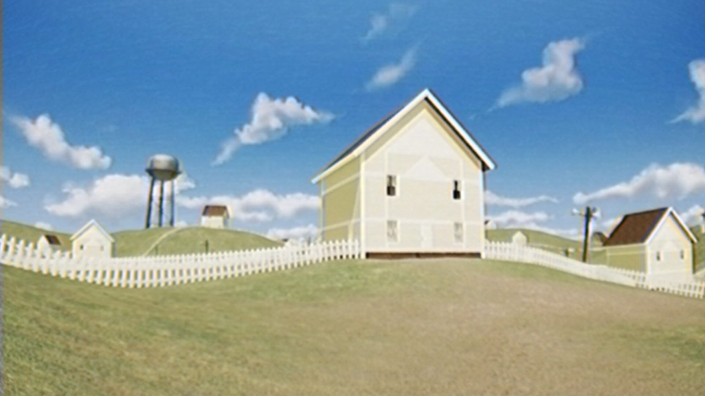
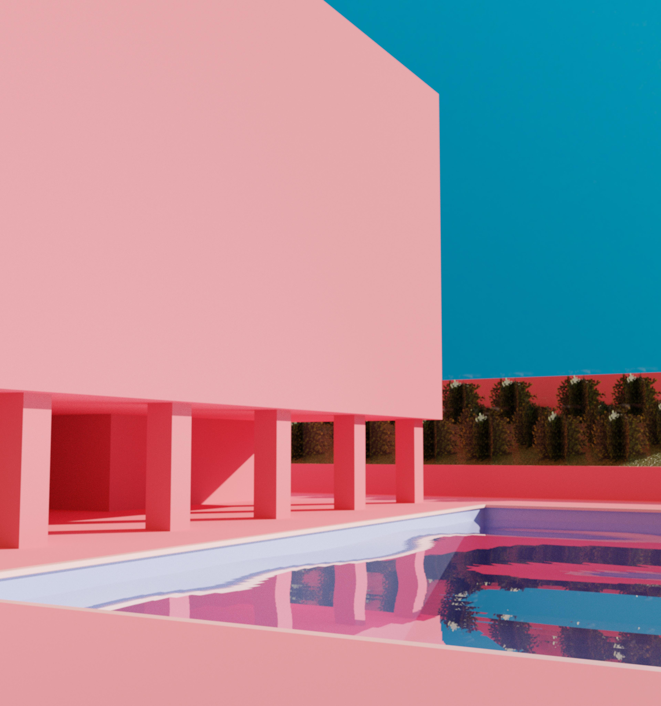
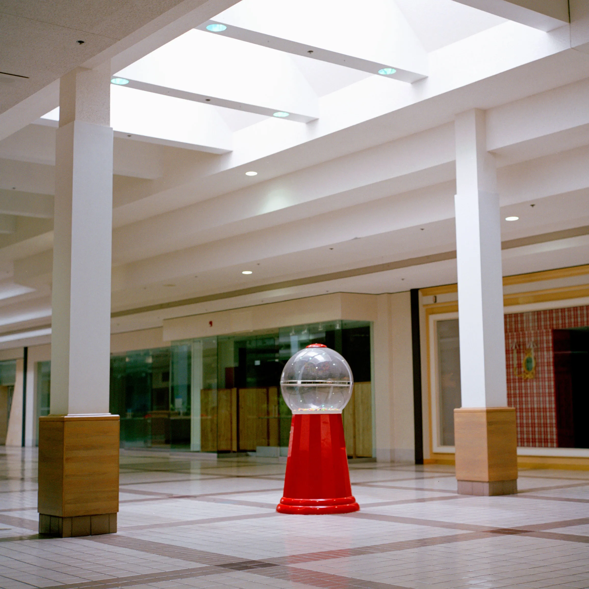

Historia y Origen

El umbral entre realidades
El término "liminal" proviene del latín "limen", que significa umbral. Originalmente utilizado en la antropología y la psicología para describir estados de transición, el concepto de **Espacios Liminales** ha evolucionado en la cultura de internet para referirse a lugares que se sienten extraños, nostálgicos o inquietantes. Estos suelen ser lugares de tránsito (pasillos, aeropuertos, centros comerciales vacíos) que, al estar despojados de su propósito original o de la presencia humana, generan una sensación de "irrealidad". La estética ganó popularidad masiva alrededor de 2019, impulsada por leyendas urbanas digitales como "The Backrooms". Se caracteriza por evocar una nostalgia por el pasado (específicamente finales de los 90 y principios de los 2000) combinada con una leve ansiedad existencial. Estos espacios nos obligan a confrontar el vacío y la naturaleza transitoria de nuestro entorno cotidiano.
Conoce más sobre la liminalidadInformación
Características importantes
- Ausencia de personas: Lugares diseñados para multitudes que se muestran totalmente vacíos.
- Transicionalidad: Son puntos A hacia puntos B, nunca destinos finales.
- Iluminación artificial: Uso frecuente de luces fluorescentes o flash de cámara que crea sombras antinaturales.
- Nostalgia Anacrónica: Elementos decorativos que parecen pertenecer a una época pasada no especificada.
- Arquitectura repetitiva: Patrones que parecen extenderse infinitamente, como en los sueños.
Top 3 ejemplos más icónicos
- Centros comerciales abandonados o cerrados por la noche.
- Pasillos de hoteles con alfombras de patrones extraños.
- Parques infantiles en medio de la niebla o la oscuridad.
Ficha técnica
| Término Principal | Liminalidad / Espacio Liminal |
|---|---|
| Origen Etimológico | Limen (Umbral en Latín) |
| Sensación Asociada | Kenopsia (La atmósfera triste de un lugar habitualmente lleno de gente que ahora está vacío) |
| Elementos Comunes | Alfombras viejas, paredes amarillentas, luces LED frías |
| Relación con Internet | Se popularizó a través de foros como 4chan y Reddit (r/LiminalSpace), derivando en subgéneros como Dreamcore, Weirdcore y los Backrooms. |
| Curiosidades |
|
Registro de Exploradores
Únete a nuestra comunidad de investigadores de la estética liminal.
Galería


